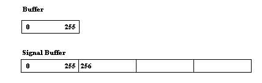
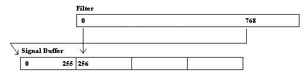

Real-Time DSP DemoI submitted a short article to C Users Journal for the March 2006 issue on developing embedded real-time DSP algorithms. More information is available on my thesis page. This is the C source and matlab driver. You'll also need the optimized TI code. The figures below are intended as additional aid for understanding circular buffers and filtering. The first shows the input buffer and full length input signal buffer. Notice the input buffer is only 256 elements. The DMA buffers 256 samples in this buffer and then interrupts the CPU. However, because the filter is 1024 elements, we really need to store the past 1024 elements of the input. If you're clever, you might be able to figure out how to get the DMA to write to different areas of a larger buffer. But that won't do you much good if you need to convert to float. Instead, I've broken the larger buffer into four segments, and then I just copy the 256 point buffer into the current region of the larger buffer. When I say current region, I mean the most recent samples where the filter begins. This shifts each frame - section 0 (0-255), section 1 (256-511), section 2 (512-767), section 3 (768-1023), section 0 (0-255), and so on. What makes this such a pain is that the start of the filter always has to begin at the start of the current region, not the start of large buffer. But the filter still has to extend all the way back over the past 1024 samples. The last samples are located just before the start of the current region. This is demonstrated below. The current region is section 2 (sample 256 in this case). That means filter coefficient 768 is multiplied by the sample at the beginning of the large buffer. And coefficient 769 is multiplied by the next sample, etc. This, of course, means you need to calculate the index so that it wraps correctly, or use some special circular buffering hardware. | ||
|  | ||